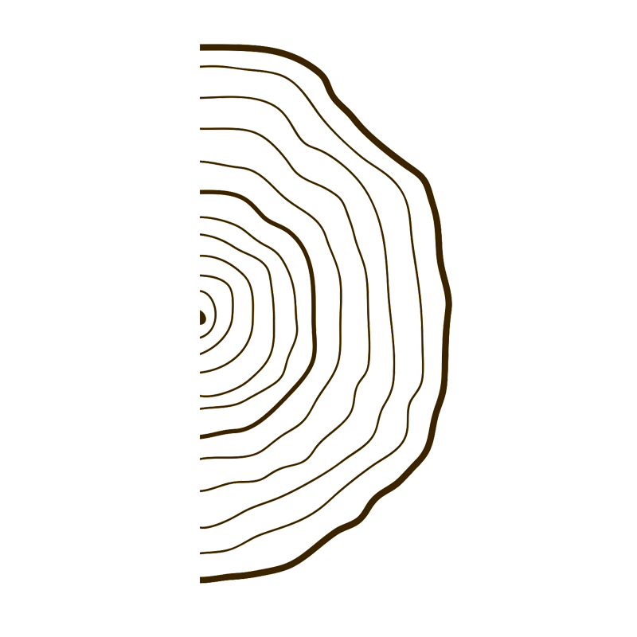

杨浛浥
喜欢观察人与消费行为。
从书本到实践，我一直在研究同一个问题：为什么人会被某些故事打动，又为什么愿意为它买单。

2000年
2000年5月出生于湖北恩施，一个说四川话的湖北人。
2018年
进入传播学领域。毕业时，我写下：希望自己成为帕斯卡尔笔下一根会思想的芦苇。于是选择继续深造。
2022年
开始在华南理工大学攻读新闻与传播硕士。在这里，我学习传播、研究媒介，也开始好奇：故事怎样传播？人与人如何建立连接？品牌又如何进入用户的生活？
2023年
网易实习。第一次接触品牌用户运营。我开始思考：品牌如何搭建一个让用户愿意停留、交流与共创的空间。
2024年
字节实习。接触UGC活动、矩阵号运营与数字营销。我逐渐意识到：流量背后不是数字，而是一个个真实的人。每一次互动、转发和讨论，背后都有具体的情绪与需求。
2024年6月
京东实习。第一次真正接触生意。开始学习如何通过用户洞察、内容策略与营销动作，把故事变成购物车里的数字。
Up to Now
Still Growing... 正在探索：AI × 用户行为 × 品牌增长。